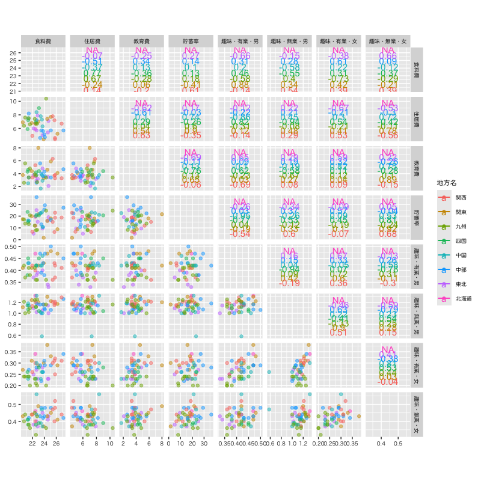
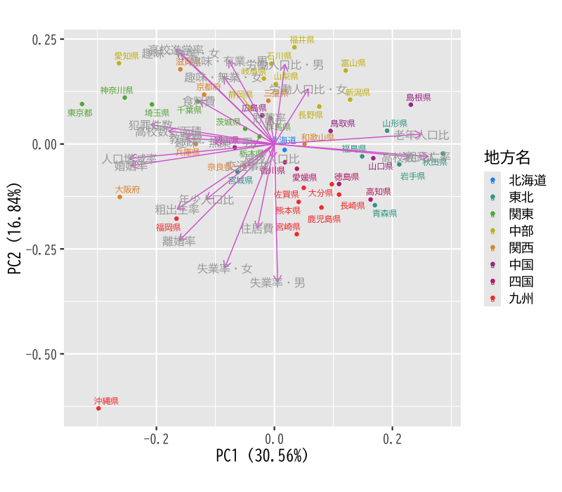
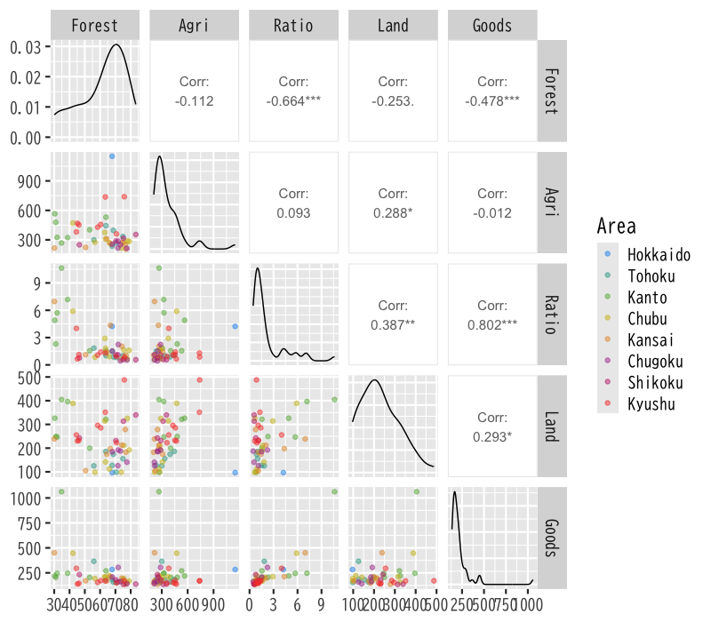
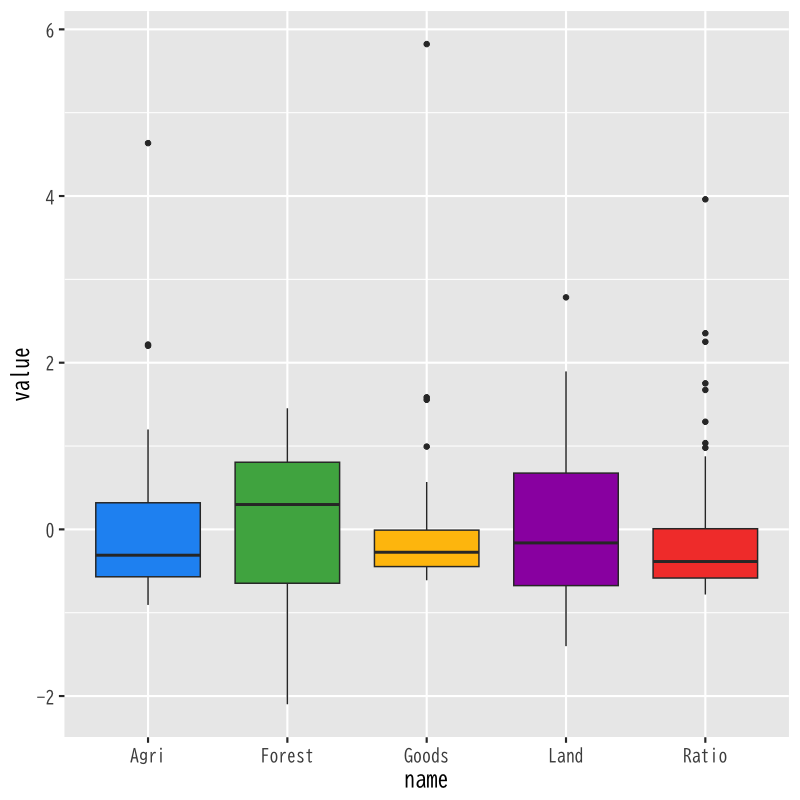

主成分分析
基本的な考え方
(Press ? for help, n and p for next and previous slide)
講義の内容
- 第1日 : 主成分分析の考え方
- 第2日 : 分析の評価と視覚化
主成分分析の例
県毎の生活環境の違いの分析
| 県名 | 年少人口比 | 老年人口比 | 婚姻率 | 離婚率 | 高校数／面積 | 交通事故 | 犯罪件数 | 食料費 | 住居費 | 貯蓄率 |
|---|---|---|---|---|---|---|---|---|---|---|

Figure 1: 県別の生活環境(教育・労働などに関連する項目)

Figure 2: 県別の生活環境(教育・労働などに関連する項目)

Figure 3: 県別の生活環境(教育・労働などに関連する項目)

Figure 4: 県別の生活環境の主成分分析
主成分分析の考え方
主成分分析
- 多数の変量のもつ情報の分析・視覚化
- 変量を効率的に縮約して少数の特徴量を構成する
- 特徴量に関与する変量間の関係を明らかにする
- PCA (Principal Component Analysis)
- 構成する特徴量 : 主成分 (princial component)
分析の枠組み
- \(x_{1},\dotsc,x_{p}\) : 変数
- \(z_{1},\dotsc,z_{d}\) : 特徴量 ( \(d\leq p\) )
変数と特徴量の関係 (線形結合)
\begin{equation} z_k=a_{1k}x_{1}+\cdots+a_{pk}x_{p}\quad(k=1,\dotsc,d) \end{equation}特徴量は定数倍の任意性があるので以下を仮定
\begin{equation} \|\boldsymbol{a}_k\|^2=\sum_{j=1}^pa_{jk}^2=1 \end{equation}
主成分分析の用語
- 特徴量 \(z_k\)
- 第 \(k\) 主成分得点 (principal component score)
- 第 \(k\) 主成分
- 係数ベクトル \(\boldsymbol{a}_k\)
- 第 \(k\) 主成分負荷量 (principal component loading)
- 第 \(k\) 主成分方向 (principal component direction)
分析の目的
目的
主成分得点 \(z_{1},\dots,z_{d}\) が変数 \(x_{1},\dotsc,x_{p}\) の情報を効率よく反映するように主成分負荷量 \(\boldsymbol{a}_{1},\dotsc,\boldsymbol{a}_{d}\) を観測データから決定する
- 分析の方針 (以下は同値)
- データの情報を最も保持する変量の 線形結合を構成
- データの情報を最も反映する 座標軸を探索
- 教師なし学習 の代表的手法の1つ
- 特徴抽出 : 情報処理に重要な特性を変数に凝集
- 次元縮約 : 入力をできるだけ少ない変数で表現
第1主成分の計算
記号の準備
- 変数 : \(x_{1},\dotsc,x_{p}\) (\(p\)次元)
観測データ : \(n\) 個の \((x_{1},\dotsc,x_{p})\) の組
\begin{equation} \{(x_{i1},\dots,x_{ip})\}_{i=1}^n \end{equation}- ベクトル表現
- \(\boldsymbol{x}_{i}=(x_{i1},\dots,x_{ip})^{\mathsf{T}}\) : \(i\) 番目の観測データ (\(p\) 次元空間内の1点)
- \(\boldsymbol{a}=(a_{1},\dots,a_{p})^{\mathsf{T}}\) : 長さ1の \(p\) 次元ベクトル
係数ベクトルによる射影
データ \(\boldsymbol{x}_{i}\) の \(\boldsymbol{a}\) 方向成分の長さ
\begin{equation} \boldsymbol{a}^{\mathsf{T}}\boldsymbol{x}_{i} \quad\text{(スカラー)} \end{equation}方向ベクトル \(\boldsymbol{a}\) をもつ直線上への点 \(\boldsymbol{x}_{i}\) の直交射影
\begin{equation} (\boldsymbol{a}^{\mathsf{T}}\boldsymbol{x}_{i})\,\boldsymbol{a} \quad\text{(スカラー \(\times\) ベクトル)} \end{equation}
幾何学的描像
Figure 5: 観測データの直交射影 (\(p=2,n=2\) の場合)
ベクトル \(\boldsymbol{a}\) の選択の指針
射影による特徴量の構成
ベクトル \(\boldsymbol{a}\) を うまく 選んで 観測データ \(\boldsymbol{x}_{1},\cdots,\boldsymbol{x}_{n}\) の情報を最も保持する1変量データ \(z_{1},\cdots,z_{n}\)を構成
\begin{equation} z_{1}=\boldsymbol{a}^{\mathsf{T}}\boldsymbol{x}_{1}, z_{2}=\boldsymbol{a}^{\mathsf{T}}\boldsymbol{x}_2, \dotsc, z_{n}=\boldsymbol{a}^{\mathsf{T}}\boldsymbol{x}_n \end{equation}特徴量のばらつきの最大化
観測データの ばらつき を最も反映するベクトル \(\boldsymbol{a}\) を選択
\begin{equation} \arg\max_{\boldsymbol{a}} \sum_{i=1}^n(\boldsymbol{a}^{\mathsf{T}}\boldsymbol{x}_{i} -\boldsymbol{a}^{\mathsf{T}}\bar{\boldsymbol{x}})^2, \quad \bar{\boldsymbol{x}} = \frac{1}{n}\sum_{i=1}^n\boldsymbol{x}_{i}, \end{equation}
ベクトル \(\boldsymbol{a}\) の最適化
最適化問題
制約条件 \(\|\boldsymbol{a}\|=1\) の下で 以下の関数を最大化せよ
\begin{equation} f(\boldsymbol{a}) = \sum_{i=1}^n(\boldsymbol{a}^{\mathsf{T}}\boldsymbol{x}_{i} -\boldsymbol{a}^{\mathsf{T}}\bar{\boldsymbol{x}})^2 \end{equation}- この最大化問題は必ず解をもつ
- \(f(\boldsymbol{a})\) は連続関数
- 集合 \(\{\boldsymbol{a}\in\mathbb{R}^p:\|\boldsymbol{a}\|=1\}\) はコンパクト(有界閉集合)
演習
問題
- 以下の問に答えなさい
評価関数 \(f(\boldsymbol{a})\) を以下の中心化したデータ行列で表しなさい
\begin{equation} X = \begin{pmatrix} \boldsymbol{x}_{1}^{\mathsf{T}}-\bar{\boldsymbol{x}}^{\mathsf{T}} \\ \vdots \\ \boldsymbol{x}_{n}^{\mathsf{T}}-\bar{\boldsymbol{x}}^{\mathsf{T}} \end{pmatrix} = \begin{pmatrix} x_{11}-\bar{x}_{1} & \cdots & x_{1p}-\bar{x}_{p}\\ \vdots & & \vdots \\ x_{n1}-\bar{x}_{1} & \cdots & x_{np}-\bar{x}_{p} \end{pmatrix} \end{equation}上の結果を用いて次の最適化問題の解の条件を求めなさい
\begin{equation} \text{maximize}\quad f(\boldsymbol{a}) \quad\text{s.t.}\quad \boldsymbol{a}^{\mathsf{T}}\boldsymbol{a}=1 \end{equation}
解答例
定義どおりに計算する
\begin{align} f(\boldsymbol{a}) &= \sum_{i=1}^n(\boldsymbol{a}^{\mathsf{T}}\boldsymbol{x}_{i} -\boldsymbol{a}^{\mathsf{T}}\bar{\boldsymbol{x}})^2\\ &= \sum_{i=1}^n (\boldsymbol{a}^{\mathsf{T}}\boldsymbol{x}_{i} -\boldsymbol{a}^{\mathsf{T}}\bar{\boldsymbol{x}}) (\boldsymbol{x}_{i}^{\mathsf{T}}\boldsymbol{a} -\bar{\boldsymbol{x}}\boldsymbol{a}^{\mathsf{T}})\\ &= \boldsymbol{a}^{\mathsf{T}}X^{\mathsf{T}}X\boldsymbol{a} \end{align}- 回帰分析の Gram 行列を参照
制約付き最適化なので未定係数法を用いればよい
\begin{equation} L(\boldsymbol{a},\lambda) =f(\boldsymbol{a})+\lambda(1-\boldsymbol{a}^{\mathsf{T}}\boldsymbol{a}) \end{equation}の鞍点
\begin{equation} \frac{\partial}{\partial\boldsymbol{a}}L(\boldsymbol{a},\lambda) =0 \end{equation}を求めればよいので
\begin{align} 2X^{\mathsf{T}}X\boldsymbol{a}-2\lambda\boldsymbol{a} &=0\\ X^{\mathsf{T}}X\boldsymbol{a} &=\lambda\boldsymbol{a} \quad\text{(固有値問題)} \end{align}
第1主成分の解
ベクトル \(\boldsymbol{a}\) の解
最適化問題
\begin{equation} \text{maximize}\quad f(\boldsymbol{a}) = \boldsymbol{a}^{\mathsf{T}}X^{\mathsf{T}}X\boldsymbol{a} \quad\text{s.t.}\quad \boldsymbol{a}^{\mathsf{T}}\boldsymbol{a}=1 \end{equation}固有値問題
\(f(\boldsymbol{a})\) の極大値を与える \(\boldsymbol{a}\) は \(X^{\mathsf{T}}X\) の固有ベクトルとなる
\begin{equation} X^{\mathsf{T}}X\boldsymbol{a} = \lambda\boldsymbol{a} \end{equation}
第1主成分
固有ベクトル\(\boldsymbol{a}\)に対する\(f(\boldsymbol{a})\) は行列 \(X^{\mathsf{T}}X\) の固有値
\begin{equation} f(\boldsymbol{a}) =\boldsymbol{a}^{\mathsf{T}}X^{\mathsf{T}}X\boldsymbol{a} =\boldsymbol{a}^{\mathsf{T}}\lambda\boldsymbol{a} =\lambda \end{equation}- 求める \(\boldsymbol{a}\) は行列 \(X^{\mathsf{T}}X\) の最大固有ベクトル (長さ1)
- 第1主成分負荷量 : 最大(第一)固有ベクトル \(\boldsymbol{a}\)
第1主成分得点
\begin{equation} z_{i1} =a_{1}x_{i1}+\cdots+a_{p}x_{ip} =\boldsymbol{a}^{\mathsf{T}}\boldsymbol{x}_{i}, \quad(i=1,\dots,n) \end{equation}
Gram 行列の性質
Gram 行列の固有値
- \(X^{\mathsf{T}}X\) は非負定値対称行列
- \(X^{\mathsf{T}}X\) の固有値は0以上の実数
固有値を重複を許して降順に並べる
\begin{equation} \lambda_{1}\geq\dotsb\geq\lambda_{p}\quad(\geq0) \end{equation}固有値 \(\lambda_{k}\) に対する固有ベクトルを \(\boldsymbol{a}_{k}\)(長さ1)とする
\begin{equation} \|\boldsymbol{a}_{k}\|=1, \quad (k=1,\dotsc,p) \end{equation}
Gram 行列のスペクトル分解
\(\boldsymbol{a}_{1},\dotsc,\boldsymbol{a}_{p}\) は 互いに直交 するようとることができる
\begin{equation} j\neq k \quad\Rightarrow\quad \boldsymbol{a}_{j}^{\mathsf{T}}\boldsymbol{a}_k=0 \end{equation}行列 \(X^{\mathsf{T}}X\) (非負定値対称行列) のスペクトル分解
\begin{align} X^{\mathsf{T}}X &=\lambda_{1}\boldsymbol{a}_{1}\boldsymbol{a}_{1}^{\mathsf{T}}+ \lambda_{2}\boldsymbol{a}_{2}\boldsymbol{a}_{2}^{\mathsf{T}}+ \dotsb+\lambda_{p}\boldsymbol{a}_{p}\boldsymbol{a}_{p}^{\mathsf{T}}\\ &=\sum_{k=1}^{p}\lambda_{k}\boldsymbol{a}_{k}\boldsymbol{a}_{k}^{\mathsf{T}} \end{align}- 固有値と固有ベクトルによる行列の表現
演習
問題
- 以下の問に答えなさい
Gram 行列のスペクトル分解において \(\lambda_{j}\) と \(\boldsymbol{a}_{j}\) が固有値・固有ベクトルとなることを確かめなさい
\begin{equation} X^{\mathsf{T}}X =\sum_{k=1}^{p}\lambda_{k}\boldsymbol{a}_{k}\boldsymbol{a}_{k}^{\mathsf{T}} \end{equation}以下の行列を用いて Gram 行列のスペクトル分解を書き直しなさい
\begin{equation} A = \begin{pmatrix} \boldsymbol{a}_{1}^{\mathsf{T}}\\ \vdots \\ \boldsymbol{a}_{p}^{\mathsf{T}} \end{pmatrix}, \quad \Lambda = \begin{pmatrix} \lambda_{1} & 0 & \dotsm & 0\\ 0 & \lambda_{2} & \dotsm & 0\\ 0 & 0 & \ddots & 0\\ 0 & 0 & \dotsm & \lambda_{p}\\ \end{pmatrix} \end{equation}
解答例
固有ベクトルの直交性に注意する
\begin{align} X^{\mathsf{T}}X\boldsymbol{a}_{j} &=\sum_{k=1}^{p}\lambda_{k}\boldsymbol{a}_{k}\boldsymbol{a}_{k}^{\mathsf{T}}\boldsymbol{a}_{j} &&\text{(直交性)}\\ &=\lambda_{j}\boldsymbol{a}_{j}\boldsymbol{a}_{j}^{\mathsf{T}}\boldsymbol{a}_{j} &&\text{(単位ベクトル)}\\ &=\lambda_{j}\boldsymbol{a}_{j} \end{align}
転置に注意して計算する
\begin{equation} X^{\mathsf{T}}X = A^{\mathsf{T}}\Lambda A \end{equation}
第2主成分以降の計算
第2主成分の考え方
- 第1主成分
- 主成分負荷量 : ベクトル \(\boldsymbol{a}_{1}\)
- 主成分得点 : \(\boldsymbol{a}_{1}^{\mathsf{T}}\boldsymbol{x}_{i}\) (\(i=1,\dotsc,n\))
第1主成分負荷量に関してデータが有する情報
\begin{equation} (\boldsymbol{a}_{1}^{\mathsf{T}}\boldsymbol{x}_{i})\,\boldsymbol{a}_{1} \quad(i=1,\dotsc,n) \end{equation}第1主成分を取り除いた観測データ (分析対象)
\begin{equation} \tilde{\boldsymbol{x}}_{i} = \boldsymbol{x}_{i} -(\boldsymbol{a}_{1}^{\mathsf{T}}\boldsymbol{x}_{i})\,\boldsymbol{a}_{1} \quad(i=1,\dotsc,n) \end{equation}
第2主成分の最適化
最適化問題
制約条件 \(\|\boldsymbol{a}\|=1\) の下で 以下の関数を最大化せよ
\begin{equation} \tilde{f}(\boldsymbol{a}) = \sum_{i=1}^n(\boldsymbol{a}^{\mathsf{T}}\tilde{\boldsymbol{x}}_{i} -\boldsymbol{a}^{\mathsf{T}}\bar{\tilde{\boldsymbol{x}}})^2 \quad\text{ただし}\quad \bar{\tilde{\boldsymbol{x}}} = \frac{1}{n}\sum_{i=1}^n\tilde{\boldsymbol{x}}_{i} \end{equation}
演習
問題
- 以下の問に答えなさい
以下の中心化したデータ行列を \(X\) と \(\boldsymbol{a}_{1}\) で表しなさい
\begin{equation} \tilde{X} = \begin{pmatrix} \tilde{\boldsymbol{x}}_{1}^{\mathsf{T}}-\bar{\tilde{\boldsymbol{x}}}^{\mathsf{T}} \\ \vdots \\ \tilde{\boldsymbol{x}}_{n}^{\mathsf{T}}-\bar{\tilde{\boldsymbol{x}}}^{\mathsf{T}} \end{pmatrix} \end{equation}上の結果を用いて 次の最適化問題の解を求めなさい
\begin{equation} \text{maximize}\quad \tilde{f}(\boldsymbol{a}) \quad\text{s.t.}\quad \boldsymbol{a}^{\mathsf{T}}\boldsymbol{a}=1 \end{equation}
解答例
定義どおりに計算する
\begin{equation} \tilde{X} = \begin{pmatrix} \tilde{\boldsymbol{x}}_{1}^{\mathsf{T}}-\bar{\tilde{\boldsymbol{x}}}^{\mathsf{T}} \\ \vdots \\ \tilde{\boldsymbol{x}}_{n}^{\mathsf{T}}-\bar{\tilde{\boldsymbol{x}}}^{\mathsf{T}} \end{pmatrix} = X-X\boldsymbol{a}_{1}\boldsymbol{a}_{1}^{\mathsf{T}} \end{equation}
Gram 行列 \(\tilde{X}^{\mathsf{T}}\tilde{X}\) を計算する
\begin{align} \tilde{X}^{\mathsf{T}}\tilde{X} &= (X-X\boldsymbol{a}_{1}\boldsymbol{a}_{1}^{\mathsf{T}})^{\mathsf{T}} (X-X\boldsymbol{a}_{1}\boldsymbol{a}_{1}^{\mathsf{T}})\\ &= X^{\mathsf{T}}X -X^{\mathsf{T}}X\boldsymbol{a}_{1}\boldsymbol{a}_{1}^{\mathsf{T}} -\boldsymbol{a}_{1}\boldsymbol{a}_{1}^{\mathsf{T}}X^{\mathsf{T}}X +\boldsymbol{a}_{1}\boldsymbol{a}_{1}^{\mathsf{T}}X^{\mathsf{T}}X\boldsymbol{a}_{1}\boldsymbol{a}_{1}^{\mathsf{T}}\\ &= X^{\mathsf{T}}X-\lambda_{1}\boldsymbol{a}_{1}\boldsymbol{a}_{1}^{\mathsf{T}}\\ &= \sum_{k=2}^{p}\lambda_{k}\boldsymbol{a}_{k}\boldsymbol{a}_{k}^{\mathsf{T}} \end{align}元の Gram 行列 \(X^{\mathsf{T}}X\) の固有ベクトル \(\boldsymbol{a}_{1}\) の固有値が0となっていると考えることができる
第2主成分以降の解
第2主成分
Gram 行列 \(\tilde{X}^{\mathsf{T}}\tilde{X}\) の固有ベクトル \(\boldsymbol{a}_{1}\) の固有値は 0
\begin{equation} \tilde{X}^{\mathsf{T}}\tilde{X}\boldsymbol{a}_{1} = 0 \end{equation}- Gram 行列 \(\tilde{X}^{\mathsf{T}}\tilde{X}\) の最大固有値は \(\lambda_2\)
- 解は第2固有値 \(\lambda_2\) に対応する固有ベクトル \(\boldsymbol{a}_2\)
- 以下同様に 第 \(k\) 主成分負荷量は \(X^{\mathsf{T}}X\) の第 \(k\) 固有値 \(\lambda_k\) に対応する固有ベクトル \(\boldsymbol{a}_k\)
解析の事例
データセットについて
- 総務省統計局より取得した都道府県別の社会生活統計指標(自然環境・経済基盤)の一部
- 総務省 https://www.e-stat.go.jp/SG1/estat/List.do?bid=000001083999&cycode=0
データ https://noboru-murata.github.io/multivariate-analysis/data/japan_social.csv
- Pref : 都道府県名
- Forest : 森林面積割合 (%) 2014年
- Agri : 就業者１人当たり農業産出額(販売農家）(万円) 2014年
- Ratio : 全国総人口に占める人口割合 (%) 2015年
- Land : 土地生産性（耕地面積１ヘクタール当たり）(万円) 2014年
- Goods : 商業年間商品販売額［卸売業＋小売業］（事業所当たり）(百万円) 2013年
- Area : 地方区分
社会生活統計指標の分析
データ(の一部)の内容
Pref Forest Agri Ratio Land Goods Area
データの散布図

Figure 6: 散布図
データの箱ひげ図

Figure 7: 箱ひげ図
標準化したデータ(の一部)
Pref Forest Agri Ratio Land Goods Area
標準化したデータの箱ひげ図

Figure 8: 箱ひげ図 (データを標準化)
主成分負荷量を計算 (標準化後)
PC1 PC2 PC3 PC4 PC5 Forest Agri Ratio Land Goods - 主成分方向から読み取れること
- 第1 : 人の多さに関する成分(正の向きほど人が多い)
- 第2 : 農業生産力に関する成分(正の向きほど高い)
主成分得点の表示

Figure 9: 主成分得点による散布図
データの標準化を行わない場合
PC1 PC2 PC3 PC4 PC5 Forest Agri Ratio Land Goods - ばらつきの大きな変数に第1主成分は重みが偏る
次回の予定
- 第1日 : 主成分分析の考え方
- 第2日 : 分析の評価と視覚化